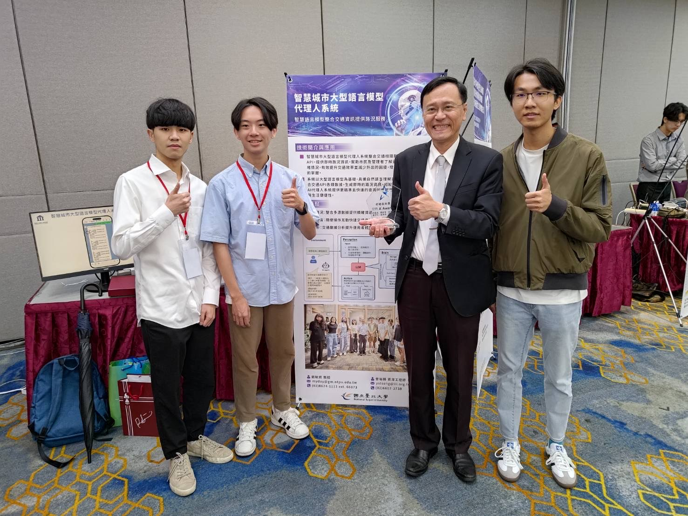
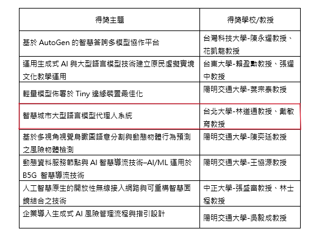

📌 活動介紹
「2024 資策會科技日」聚焦生成式 AI、智慧製造、永續淨零等創新主題，邀請超過 30 組團隊展示前瞻科技，展現我國在智慧應用與技術研發的實力。
本研究團隊以「智慧城市大型語言模型代理人系統」為題參與此次展出，由國立臺北大學資訊工程學系林道通特聘教授擔任計畫主持人，國立臺北大學資訊管理研究所戴敏育教授擔任共同主持人，並由蘇宇帆研究助理、盧信廷研究助理、籃勗祐研究助理、陳柏臻研究助理共同參與研究與展示作業。
團隊於現場介紹系統架構、應用場景與未來發展潛力，獲得現場多位專家與業界人士熱烈迴響與肯定。
📸 活動照片


🏆 得獎紀錄
獲得資策會前瞻技術獎，肯定本系統於智慧城市應用之潛力。

刊登於資策會 STAR 軟體技術年報第 86–87 頁。